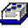

| Примечания по справочникам |
|  |
|
Основное описание
Справочники можно добавлять на главные справочные страницы RUP с помощью модулей. В дальнейшем справочники будут рассматриваться аналогично определениям терминов - модули смогут добавлять собственные справочники, а справочная страница будет создаваться аналогично созданию глоссария в настоящее время. |
© Copyright IBM Corp. 1987, 2006. Все права защищены.. |